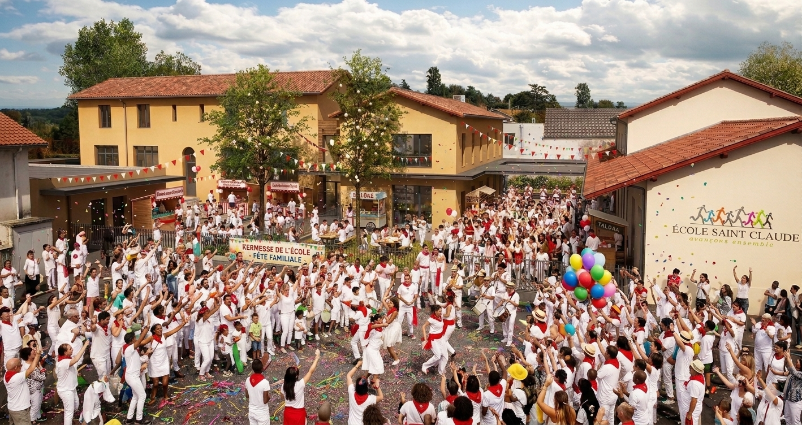

Enfants et parents, venez aux couleurs des fêtes de Bayonne.
On compte sur vous !
Cette année, nous vous emmenons le temps d'une journée au cœur de Bayonne. Venez fêter la fin d'année déguisés aux couleurs de la féria : une tenue blanche avec une touche de rouge. Foulard, ceinture ou béret : tout ce qui compte c'est de jouer le jeu ! Nous comptons sur vous pour rendre cette journée mémorable, pour les enfants comme pour nous tous !
T-shirt, polo, chemise… le haut blanc, c'est le point de départ. C'est lui qui fait le fond, et tout le reste vient s'y poser !
Plié en triangle et noué autour du cou — le geste signature des Fêtes de Bayonne. Simple, immédiatement reconnaissable !
La txingarra — large écharpe de tissu rouge enroulée à la taille. Le détail qui transforme une tenue en vrai costume de féria !
Large, plat, rouge ou blanc — le béret basque authentique. Pas obligatoire, mais ceux qui le portent remportent haut la main le concours de la meilleure tenue !
Les portes s'ouvrent, la fête commence ! Accueil des familles et premiers spectacles préparés par les enfants — les surprises commencent dès l'entrée.
Un moment fort et rassembleur : la cérémonie de fin d'année avec le Père Tabone, au cœur de la cour de récré décorée aux couleurs des Fêtes de Bayonne.
L'heure des parents ! Apéritif convivial suivi du grand repas : une paella généreuse dans la cour de récré. La vraie féria à table — olé !
Place aux jeux, ateliers et animations pour petits et grands. L'après-midi bat son plein — ambiance péña garantie !
Le moment de vérité ! Suspense et fous rires garantis. Des lots de rêve attendent les heureux gagnants — avez-vous votre ticket ?
On se quitte avec des étoiles plein les yeux, du rouge et blanc partout, et déjà hâte d'y être l'année prochaine. Aupa Baiona !
Gagnez du temps le 27 juin ! Commandez dès maintenant vos repas, activités et tickets de tombola. Tout se règle en quelques clics via HelloAsso — simple, rapide, sécurisé.
Bien évidemment ! Plus on est de fous, plus on rit — et plus la cour de récré ressemble à une vraie place de Bayonne. Pensez à leur transmettre le lien HelloAsso pour la réservation et à leur présenter le dress code blanc & rouge !
Oui, bien sûr ! La fête est ouverte à toute la famille — les enfants non scolarisés à Saint-Claude sont les bienvenus. Plus il y a de petits fêtards en blanc et rouge, mieux c'est !
Pas de stress ! Nous vous encourageons à passer par HelloAsso pour simplifier la journée des équipes de l'APEL — mais le paiement en liquide ou par carte sera possible sur place. Venez, nous nous arrangerons !
Les dons à l'APEL sont toujours les bienvenus — ils financent les projets pédagogiques de nos enfants tout au long de l'année. Une caisse sera disponible sur place, ou directement via HelloAsso.
